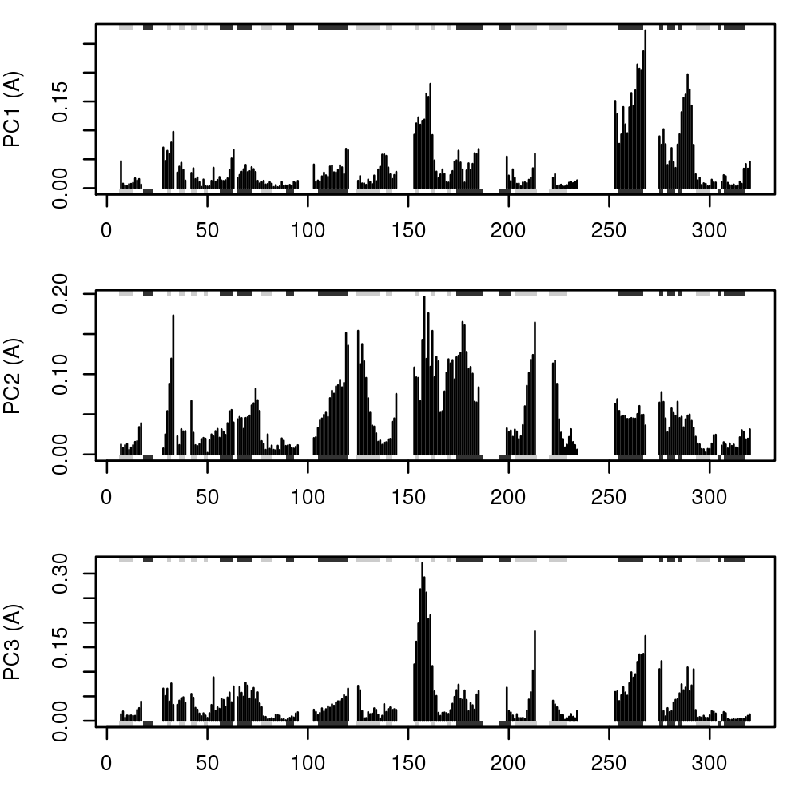

Principal Component Analysis
Usage
pca.xyz(xyz, subset = rep(TRUE, nrow(as.matrix(xyz))))
Arguments
- xyz
- numeric matrix of Cartesian coordinates with a row per structure.
- subset
- an optional vector of numeric indices that selects a
subset of rows (e.g. experimental structures vs molecular dynamics
trajectory structures) from the full
xyzmatrix. Note: the fullxyzis projected onto this subspace.
Description
Performs principal components analysis (PCA) on a xyz
numeric data matrix.
Value
Returns a list with the following components:
L eigenvalues.
U eigenvectors (i.e. the x, y, and z variable loadings).
z scores of the supplied xyz on the pcs.
au atom-wise loadings (i.e. xyz normalised eigenvectors).
sdev the standard deviations of the pcs.
mean the means that were subtracted.
References
Grant, B.J. et al. (2006) Bioinformatics 22, 2695--2696.
Examples
## Not run: # #-- Read kinesin alignment and structures # aln <- read.fasta(system.file("examples/kif1a.fa",package="bio3d")) # pdbs <- read.fasta.pdb(aln) # # # Find core # core <- core.find(pdbs, # #write.pdbs = TRUE, # verbose=TRUE) # # # Fit structures onto sub 0.5A^3 core # xyz <- fit.xyz( fixed = pdbs$xyz[1,], # mobile = pdbs, # fixed.inds = core$c0.5A.xyz, # mobile.inds = core$c0.5A.xyz) # ## End(Not run) #-- OR Read previously saved kinesin data data(kinesin) attach(kinesin, warn.conflicts=FALSE) # Remove outlier structures from kinesin alignment cut.seqs <- which(pdbs$id %in% c("d1n6mb_","d1ry6a_")) # Ignore gap containing positions gaps.res <- gap.inspect(pdbs$ali[-cut.seqs,]) gaps.pos <- gap.inspect(pdbs$xyz[-cut.seqs,]) #-- Do PCA pc.xray <- pca.xyz(xyz[-cut.seqs, gaps.pos$f.inds]) # Plot results (conformer plots & scree plot) plot(pc.xray)
## Plot atom wise loadings plot.bio3d(pc.xray$au[,1], ylab="PC1 (A)")#plot.bio3d(gaps.res$f.ind, pc.xray$au[,1], # xlab="Alignment Position", ylab="PC1 (A)") ## Plot loadings in relation to reference structure "d1bg2__" res.ref <- which(!is.gap(pdbs$ali["d1bg2__",])) res.ind <- which(res.ref %in% gaps.res$f.ind) par(mfrow = c(3, 1), cex = 0.6, mar = c(3, 4, 1, 1)) plot.bio3d(res.ind, pc.xray$au[,1], sse=sse, ylab="PC1 (A)") plot.bio3d(res.ind, pc.xray$au[,2], sse=sse, ylab="PC2 (A)") plot.bio3d(res.ind, pc.xray$au[,3], sse=sse, ylab="PC3 (A)")
## Not run: # # Write PC trajectory # a <- mktrj.pca(pc.xray, pc=1, file="pc1.pdb", # resno = pdbs$resno[1, gaps.res$f.inds], # resid = aa123(pdbs$ali[1, gaps.res$f.inds]) ) # # b <- mktrj.pca(pc.xray, pc=2, file="pc2.pdb", # resno = pdbs$resno[1, gaps.res$f.inds], # resid = aa123(pdbs$ali[1, gaps.res$f.inds]) ) # # c <- mktrj.pca(pc.xray, pc=3, file="pc3.pdb", # resno = pdbs$resno[1, gaps.res$f.inds], # resid = aa123(pdbs$ali[1, gaps.res$f.inds]) ) # ## End(Not run)